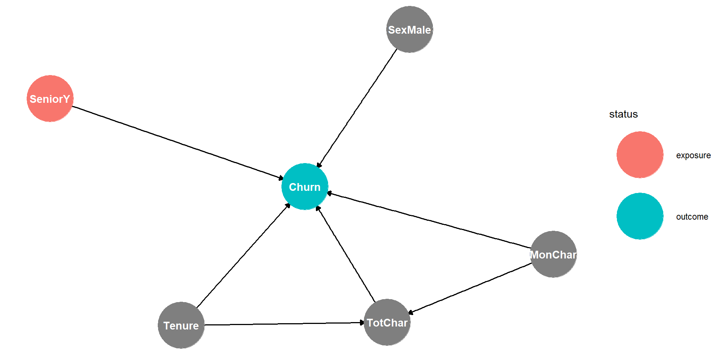

| Name | Income | Yacht |
|---|---|---|
| Jack | 45 | 1 |
| Sarah | 50 | 0 |
| Carl | 55 | 0 |
| Eric | 60 | 0 |
| Zoe | 67 | 0 |
| James | 250 | 1 |
| Enrico | 280 | 1 |
| Erica | 320 | 1 |
| Stephanie | 370 | 1 |
| Susan | 500 | 1 |
Multivariate Logistic Regression
What distinguishes data with a binary dependent variable (dummy variables) from data with a continuous dependent variable.
Why a linear regression (Linear Probability Model; LPM) is not suitable for estimating dummy variables
Why a Logistic Regression function is well suited to estimate dummy variables.
What is the difference between Odds and Probabilities
How to interpret the parameters of a Logistic Regression
| Name | Income | Yacht |
|---|---|---|
| Jack | 45 | 1 |
| Sarah | 50 | 0 |
| Carl | 55 | 0 |
| Eric | 60 | 0 |
| Zoe | 67 | 0 |
| James | 250 | 1 |
| Enrico | 280 | 1 |
| Erica | 320 | 1 |
| Stephanie | 370 | 1 |
| Susan | 500 | 1 |
Click on legend to show/hide graphs.
The data are already shown.
Activate the OLS regression line to see how data are approximated.
\[P=\frac{1}{1+e^{-(\beta_1* Inc + \beta_2)}}\]
\[P=\frac{1}{1+e^{-(\beta_1* Inc + \beta_2)}}\]
Click on legend to show/hide graphs.
50%-Level and Decision Boundary graphs are currently hidden
Adjust beta1 and beta2 to improve MSE of Logistic Regression
\[P=\frac{1}{1+e^{-(\beta_1* Inc + \beta_2)}}\]
Click on legend to show/hide graphs.
50%-Level and Decision Boundary graphs are currently hidden
Use 50%-Level and Decision Boundary to see predicted yacht ownership fot data
Assume a horse has a chance of \(40\%\) to end up in the first three and you bet on this. The probability for you to win are:
\[P=0.4\]
The Odds are the chance to win compared to the chance not to win:
\[ Odds=\frac{P}{1-P}=\frac{0.4}{1-0.4}=\frac{0.4}{0.6}=\frac{2}{3} \] The odds are two-to-three.
Remember for later: \[Odds=\frac{P}{1-P}\]
\[P=\frac{1}{1+e^{-(\beta_1\cdot x_i+\beta_2)}} \]
Take the reciprocal on both sides of the equation:
\[\frac{1}{P}=1+e^{-(\beta_1\cdot x_i+\beta_2)}\]
Subtract 1 on both sides:
\[\frac{1}{P}-1=e^{-(\beta_1\cdot x_i+\beta_2)}\]
Consider that \(-1=-\frac{P}{P}\):
\[\frac{1}{P}-\frac{P}{P}=e^{-(\beta_1\cdot x_i+\beta_2)}\] Simplify:
\[\frac{1-P}{P}=e^{-(\beta_1\cdot x_i+\beta_2)}\]
Take again the reciprocal of both sides:
\[\underbrace{\frac{P}{1- P}}_{Odds_i}=e^{\beta_1\cdot x_i+\beta_2}\]
Take the logarithm on both sides:
\[ \ln(Odds)=\beta_1\cdot x_i+\beta_2 \] If \(x\) changes by one unit then $ (Odds)$ changes by \(\beta_1\) — which is a relative (percentage) change.
Research Question:
Should seniors treated diferently when it comes to churn prevention?

DataChurn=DataChurn |>
mutate(ChurnYes=as.factor(ChurnYes))
set.seed(789)
Split3070=initial_split(DataChurn, prop=0.7,strata=ChurnYes)
DataTrain=training(Split3070)
DataTest=testing(Split3070)
head(DataTrain) SeniorYes Tenure MonthlyCharges TotalCharges ChurnYes MaleYes
1 0 1 29.85 29.85 0 0
2 0 45 42.30 1840.75 0 1
3 0 22 89.10 1949.40 0 1
4 0 10 29.75 301.90 0 0
5 0 62 56.15 3487.95 0 1
6 0 13 49.95 587.45 0 1# A tibble: 4 × 5
term estimate std.error statistic p.value
<chr> <dbl> <dbl> <dbl> <dbl>
1 (Intercept) -2.07 0.0957 -21.7 2.85e-104
2 MaleYes -0.0540 0.0663 -0.814 4.16e- 1
3 SeniorYes 0.651 0.0835 7.80 6.18e- 15
4 MonthlyCharges 0.0142 0.00119 12.0 3.93e- 33# A tibble: 6 × 8
SeniorYes Tenure MonthlyCharges ChurnYes MaleYes .pred_class .pred_0 .pred_1
<int> <int> <dbl> <fct> <dbl> <fct> <dbl> <dbl>
1 0 34 57.0 0 1 0 0.789 0.211
2 0 16 19.0 0 1 0 0.865 0.135
3 0 69 113. 0 0 0 0.614 0.386
4 0 52 20.6 0 0 0 0.856 0.144
5 0 71 107. 0 1 0 0.648 0.352
6 1 1 39.6 1 1 0 0.714 0.286Confusion Matrix:
Truth
Prediction 0 1
0 1497 545
1 52 16step_downsample()
step_upsample()
step_smote()
library(rio)
library(janitor)
library(tidymodels)
DataChurnOrg=import("https://ai.lange-analytics.com/data/TelcoData.csv") |>
clean_names("upper_camel")
DataChurn=DataChurnOrg |>
select(Churn,Gender,SeniorYes=SeniorCitizen,Tenure,MonthlyCharges, TotalCharges) |>
mutate(ChurnYes=ifelse(Churn=="Yes",1,0), Churn=NULL) |>
mutate(MaleYes=ifelse(Gender=="Male",1,0), Gender=NULL) |>
na.omit(TotalCharges)
library(corrplot)
corrplot(cor(DataChurn))
library(SmartEDA)
ExpReport(DataChurnOrg, op_file="EDAChurnData.html")
DataChurn=DataChurn |>
mutate(ChurnYes=as.factor(ChurnYes))
set.seed(789)
Split3070=initial_split(DataChurn, prop=0.7,strata=ChurnYes)
DataTrain=training(Split3070)
DataTest=testing(Split3070)
ModelDesignLogistic=logistic_reg() |>
set_engine("glm") |>
set_mode("classification")
library(themis) #needed for step_smote
RecipeChurn=recipe(DataTrain, ChurnYes~MaleYes+SeniorYes+MonthlyCharges) |>
step_smote(ChurnYes)
WFModelChurn=workflow() |>
add_recipe(RecipeChurn) |>
add_model(ModelDesignLogistic) |>
fit(DataTrain)
DataTestWithPred=augment(WFModelChurn, new_data = DataTest)
conf_mat(DataTestWithPred, truth=ChurnYes, estimate= .pred_class)
FctMetricsCL=metric_set(accuracy, sensitivity, specificity)
FctMetricsCL(DataTestWithPred, truth=ChurnYes, estimate= .pred_class)